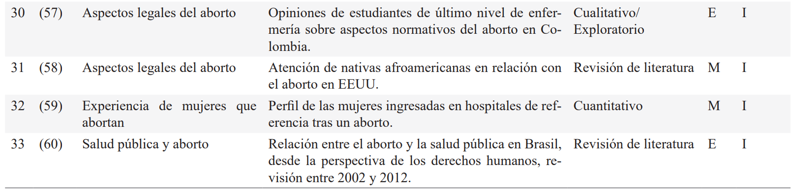

ISSN-PRINT 1794-9831 / E-ISSN 2322-7028
Vol. 19 Nº 3 / sep - dic, 2022 / Cúcuta, Colombia.
ISSN-PRINT 1794-9831 / E-ISSN 2322-7028
Vol. 19 Nº 3 / sep - dic, 2022 / Cúcuta, Colombia.
Resumen
Objetivo: Analizar las preguntas, metodologías y tendencias en investigaciones realizadas por enfermeras/os, con el fin de identificar los intereses disciplinares y posibles derivaciones en el desarrollo del conocimiento y las prácticas de cuidado. Metodología: Revisión panorámica en las bases de datos: Scielo, BVS, PubMed y Redalyc, con una ventana de búsqueda de 2008 a 2020, en idiomas español, inglés y portugués. Se incluyeron 33 artículos, producto de la búsqueda con términos de: MeSH, Nursing Care, Abortion, Abortion Applicants. Además, se emplearon expresiones en español sobre: cuidado de enfermería; enfermería; el aborto; el aborto y cuidado de enfermería en la salud pública; aborto inducido y cuidado de enfermería sobre salud mental; aborto criminal y salud mental; y, cuidado de enfermería frente a solicitantes de aborto. Análisis: Se observó una relación entre el tipo de estudios y el contexto jurídico de los países en que se realizaron. Son relevantes los estudios respecto de las actitudes, creencias y prácticas de enfermería en torno al aborto, poniendo el foco en la subjetividad de los profesionales de la disciplina. Resaltan los estudios cualitativos, haciendo acopio de teorías y conceptos de procedencia multidisciplinar y solo marginalmente de aquella producida por la disciplina de enfermería. Conclusiones: Las preguntas más frecuentes que se hacen las enfermeras/os sobre el aborto se dirigen especialmente a examinar las formas en que se provee el cuidado de enfermería a las mujeres que pasan por esta experiencia; del mismo modo se evidencia el correlato en las experiencias emocionales y dilemas éticos para el personal de enfermería, constituyéndose en un fenómeno controversial. Lo expuesto anteriormente implica para la disciplina de enfermería ampliar el repertorio para el abordaje epistemológico de este fenómeno, con miradas críticas transdisciplinares, que consideren el contexto social, cultural y normativo, con el fin de enriquecer la investigación disciplinar, que tenga efectos sobre la práctica profesional y los procesos de formación.
Palabras Claves: Cuidado de enfermería; Aborto; Solicitantes de aborto; Revisión.
Abstract
Objective: Analyze the questions, methodologies and tendencies made in nursing research, with the purpose of identifying the disciplinary interests and possible derivations in the development of knowledge and care practices. Methodology: Scoping review in the databases: Scielo, BVS, Pubmed and Redalyc, with a search window from 2008 to 2020, in Spanish, English and Portuguese. Thirty-three articles were included, resulting from the search of the terms: MeSH, Nursing Care, Abortion, Abortion Applicants. Furthermore, the following Spanish expressions were used: nursing care; nursing; abortion; abortion and nursing care in public health; induced abortion and mental health nursing care; criminal abortion and mental health; and, nursing care for abortion applicants. Analysis: A relationship was observed between the type of studies and the legal context of the countries in which these were conducted. The studies about the attitudes, beliefs and nursing practices regarding abortion are relevant, focusing on the subjectivity of the professionals of this discipline. The qualitative studies stand out, gathering theories and concepts from multidisciplinary sources, and only marginally those from the nursing discipline. Conclusions: The most frequently asked questions that nurses have about abortion are specially directed to examine the ways in which nursing care is provided to women who undergo this experience; similarly, the correlation between the emotional experiences and the ethical dilemmas for the nursing personnel is evidenced, constituting a controversial phenomenon. The forementioned implies for the nursing discipline to broaden the repertoire for the epistemological approach of this phenomenon, with transdisciplinary critical views, that consider the social, cultural and regulatory context, in order to enrich the disciplinary research, having effects on the professional practice and the training processes.
KeyWords: Nursing care; Abortion; Abortion applicants; Review.
Resumo
Objetivo: Analisar as questões, metodologias e tendências nas pesquisas realizadas pelos enfermeiros, a fim de identificar interesses disciplinares e possíveis derivações no desenvolvimento de práticas de conhecimento e cuidado. Metodologia: Revisão panorâmica nas bases de dados: Scielo, VHL, PubMed e Redalyc, com uma janela de pesquisa entre 2008 e 2020, em espanhol, inglês e português. Foram incluídos 33 artigos, produto da pesquisa com termos: MeSH, Nursing Care, Abortion, Abortion Applicants. Além disso, foram utilizadas expressões em espanhol: cuidado de enfermería, enfermería, aborto, aborto e cuidado de enfermería e salud pública; aborto inducido e cuidado de enfermería e salud mental; aborto criminal e salud mental e cuidado de enfermería, solicitantes de aborto. Análise: Observou-se relação entre o tipo de estudo e o contexto jurídico dos países em que foram realizados. Estudos sobre atitudes, crenças e práticas de enfermagem em torno do aborto são relevantes, com foco na subjetividade dos profissionais da disciplina. Destacam-se estudos qualitativos, colecionando teorias e conceitos de origem multidisciplinar e apenas marginalmente produzidas pela disciplina de enfermagem. Conclusões: As perguntas mais frequentes das enfermeiras sobre o aborto visam especialmente examinar as formas como a assistência de enfermagem é prestada às mulheres que passam por essa experiência; da mesma forma, evidencia-se a correlação entre experiências emocionais e dilemas éticos para o pessoal de enfermagem, tornando-se um fenômeno controverso. Os achados implicam à disciplina de enfermagem ampliar o repertório para a abordagem epistemológica desse fenômeno, com perspectivas críticas transdisciplinares, que considerem o contexto social, cultural e normativo, a fim de enriquecer a pesquisa disciplinar, com efeitos na prática profissional e nos processos formativos.
Palavras-chave: Cuidados de enfermagem; Aborto; Aspirantes a aborto; Revisão
Autor de correspondencia*
† Ese artículo se
deriva de la tesis doctoral (en proceso) titulada “Trayectorias
de cuidado entre mujeres que deciden
abortar en Ecuador, 2021-2023”, realizada para optar por el título de Doctora en Enfermería de la
Universidad de
Antioquia realizada por Gina Alonso y
asesorada por Beatriz Elena Arias
Ese artículo se
deriva de la tesis doctoral (en proceso) titulada “Trayectorias
de cuidado entre mujeres que deciden
abortar en Ecuador, 2021-2023”, realizada para optar por el título de Doctora en Enfermería de la
Universidad de
Antioquia realizada por Gina Alonso y
asesorada por Beatriz Elena Arias
1* Licenciada en
enfermería, Magister
en Emergencias Médicas, PhD (c) en
Enfermería, Universidad de Antioquia,
Docente Universidad Estatal del Sur
de Manabí, Jipijapa, Ecuador.
gina.alonzo@unesum.edu.ec,  0000-0003-0041-2956
0000-0003-0041-2956
2* Enfermera,
Magister en Educación y
Desarrollo Comunitario, PhD en Salud
Mental, Docente Universidad de Antioquia, Medellín, Colombia.
beatriz.arias@udea.edu.co, 0000-0002-3326-0402
Recibido: 22 abril 2022
Aprobado: 20 agosto 2022
Para citar este artículo / To reference this article / Para citar este artigo: Alonso-Muñiz GE, Arias-Lopez BE. ¿Qué se preguntan las enfermeras sobre el aborto? Una revisión panorámica. 2022; 19(3):96-111. https://doi.org/10.22463/17949831.3321
© Universidad Francisco de Paula Santander.
Este es un artículo bajo la licencia CC-BY-NC-ND

Introducción
Existe un consenso en el mundo académico en considerar el aborto como un problema de salud pública y de derechos humanos, que plantea desafíos y retos a las distintas disciplinas y profesiones (1-4). Su complejidad involucra dimensiones convergentes de carácter médico, social, jurídico, ético y político, donde los contextos normativos y sociales, incluidos aquellos del negacionismo y la prohibición, han contribuido a disputas que afectan en forma importante a las mujeres, especialmente a aquellas que se ven forzadas a realizarlo en la clandestinidad y sin las condiciones de seguridad y cuidado requeridas. Hay que precisar que las mujeres abortan sin condiciones mínimas, especialmente en contextos con menores accesos económicos y educativos (2, 5-7), donde suele aumentar el número de embarazos no deseados (10-11). En América Latina, la criminalización tiende a incrementar los niveles de mortalidad, morbilidad, sufrimiento y estigmatización (8), limitando el derecho de las mujeres a decidir sobre su propio cuerpo (9).
Hay que mencionar que el aborto es defendido por grupos feministas alrededor del mundo, quienes lo incluyen como un derecho (12-13), en contraposición a los grupos conservadores, también llamados provida, quienes ven el aborto como un pecado (14). A pesar de los debates sobre el tema, la realidad es que solo se han logrado avances parciales, no solamente en América Latina, sino en otros continentes, donde es débil la legislación y las políticas públicas enfocadas en la defensa de los derechos de las mujeres (15-18).
Conviene indicar que esta situación dilemática y contradictoria, interpela de forma directa a los profesionales de la salud, incluidas las/os enfermeras/os. Puesto que su misión es el cuidado de la salud y la vida, se han interesado por la comprensión de la experiencia, identificando distintos sentidos en la producción de conocimiento disciplinar, incluidos propósitos sociopolíticos y emancipatorios (19-21). Es así como en este artículo se explora dicha intención, a partir de los siguientes interrogantes: ¿Que preguntas se están haciendo las/os enfermeras/os con relación al aborto? ¿Cuáles son los abordajes metodológicos con los que emprenden sus investigaciones? ¿Cuáles teorías o conceptos iluminan sus búsquedas? ¿Cuáles tendencias se encuentran en sus hallazgos? Al respecto, se realizó una revisión y análisis de bibliografía seleccionada sobre el tema, con el objetivo general de describir las principales tendencias de la investigación a partir de la literatura publicada, cuya autoría fuese de profesionales de enfermería. En términos específicos se buscó determinar los campos temáticos y problemáticos más relevantes, el panorama de las metodologías utilizadas, las vías conceptuales y teóricas de acercamiento, además de comprender la contextualización de los hallazgos en función de las diferencias sobre jurisprudencia de los países de procedencia de los estudios.
Metodología
Revisión panorámica (scoping review), cuya finalidad fue identificar cómo es conceptualizado el aborto en la literatura (22), desde una perspectiva general del desarrollo científico, identificando conocimientos emergentes (22-25). Se siguieron los lineamientos de la guía para revisiones panorámicas del JBI Joanna Briggs Institute (25) y de la declaración PRISMA (Preferred Reporting Items for Systematic reviews and Meta-Analyses extension for Scoping Reviews) (26). Para establecer la pregunta se utilizó la estrategia PICO (Participants, Interventions, Comparisons, Outcomes) acotada (23).
Se privilegiaron los términos MeSH, Nursing Care, Abortion, Abortion Applicants; en español: cuidado de enfermería, enfermería, aborto, aborto y cuidado de enfermería y salud pública; aborto inducido y cuidado de enfermería y salud mental; aborto criminal y salud mental y cuidado de enfermería, solicitantes de aborto; y, en portugués: cuidados de enfermagem, aborto, solicitantes de aborto; aborto e saúde pública; aborto induzido e cuidados de enfermagem e saúde mental; aborto criminoso e saúde mental e cuidados de enfermagem, requerentes de aborto. Las bases de datos que se utilizaron fueron: Scielo, BVS, Lilacs, PubMed y Redalyc, con un periodo de búsqueda de 2008 a 2020, en inglés, español y portugués. Los criterios de elegibilidad incluyeron texto completo disponible, referencias verificables, autoría de profesionales de enfermería, los cuales terminaron de refinarse una vez se sometieron los artículos a crítica. Este proceso se detalla en la figura 1.
Para el análisis de los datos se empleó una matriz de síntesis en MS Excel. A partir de la lectura detenida y cruzada de los artículos, se establecieron categorías temáticas que agruparon los estudios analizados, considerando los objetivos. Estos resultados se detallan a continuación.
Análisis
Métricas
La metodología arrojó como resultado un total de 33 artículos: 16 BVS, 7 Redalyc, 5 PubMed y 5 Scielo, la mayoría publicados entre 2011 y 2014. Se hallaron en idioma inglés el 57,5%, seguidos del portugués con el 30% y solo 12% en español; otros datos descriptivos se aprecian en la figura 2. En cuanto a la situación legal, la interrupción voluntaria del embarazo IVE se considera legal cuando se encuentra normada y legalizada; ilegal es cuando solo se permite bajo determinadas condiciones (riesgo de vida de la madre, del feto, violación, condición socioeconómica, entre otras); en situación mixta o no regulada, influyen circunstancias jurídicas en las que, o bien no se encuentra normado el aborto, o bien se presenta legalizado en algunas jurisdicciones del territorio nacional y no en otras.
Figura 1: Diagrama de flujo de revisión panorámica
Fuente: Elaborado por autoras con base en lineamientos de PRISMA(26)
La mitad de los artículos tienen diseños cualitativos, seguidos de revisiones (27%), diseños cuantitativos (15%) y escritos reflexivos (7%). Las revisiones ocupan una ventana de observación de 1971 a 2016. La mayoría de los estudios focalizan como población a las/ os enfermeras/os, con sus experiencias, sus prácticas y subjetividades (63,5%) a los equipos de salud (6%), y solo el 18% se orientan a conocer la perspectiva de las mujeres que experimentan el aborto. Llama la atención que solo el 84% de los estudios focalizan el aborto inducido como caso de exploración, sobre aquellos de tipo espontáneo y eugenésico. Respecto a la situación jurídica de la IVE, en la tabla 1 se identifican los países donde se hicieron los estudios, con sus normativas y la magnitud de artículos publicados.
Figura 2: Datos descriptivos de resultados
Fuente: Elaborado por autoras.
Tabla 1. Situación normativa de la IVE en países de realización del estudio
Fuente: Elaborado con base en datos de la OMS actuales, en Global Abortion Policies Database (2022) (27). *En Colombia se tomó como referencia la norma de 2006, vigente en la ventana de búsqueda de los artículos. Durante la escritura del artículo, en el año 2022 esta fue modificada, legalizándolo hasta la semana 24 y manteniendo causales a partir de esta semana gestacional. ** En 2007 el aborto fue despenalizado en Ciudad de México; su situación es variable dependiendo del Estado/Provincia, aunque en la mayoría de estos es ilegal y permitido bajo ciertas condiciones. *** En Taiwán no se encuentra normado, aunque se permite y en general su realización se efectúa bajo petición justificada de la mujer
En la tabla número 2 se presentan los estudios seleccionados con sus objetivos, la población y los instrumentos de recolección de datos utilizados, y su clasificación en las categorías temáticas y problemáticas analizadas.
Tabla 2. Artículos seleccionados
Fuente: Elaborada por autoras.
Nota. En el encabezado de la tabla N: número identificador del artículo; Ref: número de cita en la bibliografía del artículo; M: metodología; P: población o voz que recoge; TA: tipo de aborto. En P (población) E: Enfermeras/os; M: mujeres; PS: personal de salud. En TA (tipo de aborto) E: espontáneo; EU: eugenésico; I: inducido/provocado; L: legal.
En la tabla 3 se sintetizan 6 temáticas centrales, las cuales se recogen en función de sus objetivos, preguntas y hallazgos; podrá encontrarse allí la categoría temática con los artículos que la abordan, además de indicarse el peso porcentual de cada una.
Tabla 3. Categorías temáticas
Fuente: Elaborada por autoras.
Nota. Se indica con colores la situación jurídica de los países en que se realizaron los estudios. Verde: IVE legal; naranja: países con IVE ilegal; azul: países con situación jurídica de IVE mixta o no normada.
Tematizaciones
- Cuidados de enfermería y atención de los equipos sanitarios en situaciones de aborto: Las producciones señalan que el cuidado de enfermería se ha mantenido en una dirección tecnicista, discriminatoria, juzgadora y burocrática, lo que contradice el código de ética de la profesión promulgado por el Consejo Internacional de enfermería CIE en 1953, cuya última actualización es del año 2021, en el cual se hace alusión a un proceder enfermero de reflexión y empatía, reiterando que no es posible cuidar sin establecer una relación interpersonal y un vínculo (29) (37).
En los países donde el aborto no es criminalizado las/ os enfermeras/os se han involucrado en la educación, el asesoramiento y la atención de las mujeres que buscan estos servicios (37) mediante procesos de empoderamiento profesional (39). No obstante, en los contextos normativos y morales más adversos, el cuidado se presenta mediado por una serie de prejuicios, que en algunos casos conlleva a establecer relaciones entre la enfermera y las mujeres, limitadas a asuntos meramente procedimentales y técnicos (51); de ahí que se coloque en segundo lugar la comprensión de la experiencia vivida por las mujeres, por tanto, las preguntas sobre la praxis de enfermería y el rol que desempeña el profesional tomen relevancia en los estudios (50, 53). La estigmatización social del aborto inducido y la criminalización (50-51) son factores que influyen en la praxis de enfermería, con efectos tanto positivos como negativos (51,53).
El empoderamiento de las/os enfermeras/os, no solo como profesionales, sino desde su misma condición de mujeres, puede mejorar la práctica profesional (39), lo que se complementa con los hallazgos de Lipp (41) y Hoffmann (45), quienes señalan que las/os enfermeras/ os reconocen la necesidad de mantener una distancia valórica en su práctica para preservar y privilegiar el derecho de las mujeres a decidir, por encima de sus convicciones morales. El rol de la enfermera frente al cuidado de las mujeres que abortan es central para McLemore y Levi (37), quienes consideran que existen lagunas sobre esta temática y que la investigación aún no ha sido consistente para definir adecuadamente dicho rol. En este sentido, no se encuentra consenso sobre las intervenciones, los tratamientos, los estándares de cuidado que se deben prestar (44), siendo este un campo abierto para la exploración. A pesar de esta limitación, se señala que se ha avanzado en asuntos relacionados con los tratamientos del dolor, la seguridad en la prestación del cuidado y la revisión de estándares y competencias de las/os enfermeras/os (37). Por otro lado, en contextos donde el aborto está legalizado, es significativa la indagación por parte de enfermería respecto a las competencias referidas al duelo (29,37), resaltando la falta de capacitación en la dimensión psicológica y emocional para la mejora de los cuidados (29). Con respecto a la atención que presta el personal sanitario es heterogénea en las revisiones estudiadas, observando una determinada influencia por las representaciones sociales, los valores y los prejuicios (32, 45).
- Experiencias emocionales, necesidades y dilemas éticos de las/os enfermeras/os: En relación con lo anterior, se encuentran preguntas sobre cómo la ética, la moral y los valores modulan la práctica de enfermería en una situación de aborto (33). Esto es especialmente relevante en el caso del aborto inducido (31, 34), y llama la atención cómo aparece recurrentemente en aquellos contextos donde el aborto se considera legal. Yang et al. (31), sugieren que las/os enfermeras/os reprimen sus reparos éticos, ocultando emociones y sentimientos, los cuales están dados por sus contextos socioculturales; por tanto, es importante atender las necesidades emocionales y valóricas, así como apoyar a las/os enfermeras/os en estas circunstancias (38). La estigmatización del aborto aparece como un tema central en la consideración emocional y ética de las/os enfermeras/os (41), que en muchos casos no está directamente relacionado con el contexto normativo.
Por su parte, Agnese y Squillace (32) plantean que la práctica podría mejorar con una mayor capacitación, colaboración entre atención primaria y terciaria y actualización disciplinar constante; mientras Parket et al. (38), añaden que una mayor vinculación con el medio puede promover una mejor praxis; en particular se evidencia que el conocimiento de las circunstancias en las que las mujeres realizan abortos puede favorecer el trabajo de enfermería, en tanto se incorporan las propias representaciones sociales (46). Una visión particularmente contrapuesta plantea Trejo (39), quien sugiere que los dilemas éticos en torno al aborto están dados por la imposición de su realización en casos de legalización, obligando con ello a enfermeras/os a practicarlo aun con su conciencia en contra. Por el contrario, Mauri y Squillace (28) evidencian en su estudio que, tras largos años de legalización, las/os enfermeras/os han aprendido a afrontarlo de mejor manera y con mayores competencias. La objeción de consciencia es un tema poco abordado (46), al respecto, Mohammad et al., (47) ponen en relieve que se dispone de este mecanismo, y que debe ser utilizado atendiendo a criterios valóricos sin caer en el prejuicio o la discriminación.
- Experiencia de mujeres que abortan: La mayoría de estudios que focalizan la experiencia de las mujeres fue abordado por enfermeras/os procedentes de contextos de ilegalidad de la IVE, con opciones restrictivas. Se centran en las razones que llevan a las mujeres a tomar la decisión, apareciendo asuntos como la violencia doméstica y de pareja (50, 55), además de la vulnera bilidad económica (59). Se documenta que las mujeres que practican abortos inducidos suelen sentir dolor psicológico asociado a sus creencias, valores y representaciones sociales en torno al aborto, situaciones que aumentan su vulnerabilidad (48, 54-55).
- Salud pública y aspectos legales sobre el aborto: Comprender el aborto desde la dimensión política y colectiva es central; sin embargo, no parece ocupar el interés por parte de los investigadores en enfermería, con pocos estudios en esta vía; en cambio están quienes focalizan principalmente los temas de disponibilidad y acceso, con efecto sobre la praxis de enfermería (56, 60). Ambos estudios se hicieron en contextos de ilegalidad de la IVE. Arnold (58) considera el aborto un tema central en determinadas minorías, por ejemplo, población indígena en Norteamérica, además de relacionarlo con una deficiente política de salud. Por su parte, Laza (57) da cuenta sobre la importancia de conocer los aspectos normativos por parte de estudiantes de enfermería, aunque es imposible generalizar estos resultados.
Abordajes y conceptualizaciones
La mayoría de artículos no presenta en forma explícita un encuadre teórico que oriente el estudio, presentando más bien nociones variadas como: objeción de conciencia, criminalización y derechos humanos (57-58), trabajo emocional (34), estigma (41), afrontamiento (38), violencia doméstica (40) o bioética (56). No obstante, algunos se posicionan en teorías procedentes de diversas disciplinas y con perspectivas feministas (41, 52, 58).
Solo se encontró la alusión a modelos disciplinares de enfermería en 2 de los 33 artículos. La teoría de la vida humana (61) enmarcó el estudio de Gallagher (39), acudiendo a las nociones de los dominios del paciente y sus tres dimensiones, esto es: vivir con uno mismo, vivir con los demás y vivir en situaciones, siendo el objetivo de las/os enfermeras/os apoyar a los pacientes en sus vivencias. Esta perspectiva se considera muy pertinente para el caso del cuidado de las mujeres que abortan, razón por la cual las/os enfermeras/os deben focalizar las dimensiones mencionadas. Por otra parte, el trabajo de McLemore (33) se posicionó desde la perspectiva de la teoría de Benner, donde se considera que los desafíos éticos son rutinarios dentro de la práctica de enfermería, la cual se estructura en los niveles principiante, principiante avanzado, competente, eficiente y experto (62). Por tanto, las decisiones que toman la/os enfermeras/os están sometidas a las consideraciones sobre valores personales, además están influenciadas/os por otros factores, como la situación jurídica, la estigmatización, las razones por las que las mujeres abortan, entre otras; que inciden en su práctica y que van configurando sus niveles de experticia.
Conclusiones
Los estudios analizados dan cuenta de las temáticas investigadas por enfermería en torno al aborto, y arrojan luces sobre su complejidad que no termina de ser resuelta, sobre todo en países donde el contexto normativo es aún restrictivo. Es importante mencionar que si bien la cantidad de estudios es mayoritaria en aquellos países en los que la IVE es ilegal; sin embargo, continúa siendo de interés general.
Las categorías temáticas identificadas dan cuenta de que los aspectos más estudiados son: los cuidados de enfermería, especialmente en el caso de abortos inducidos; las experiencias emocionales; las necesidades y los dilemas éticos que enfrenta el personal de enfermería, mostrando cómo la práctica del cuidado está fuertemente influida por la subjetividad, en la que se decantan sus creencias, valores, prejuicios; es decir, en sus contextos de socialización y formación (39, 50-53), sin que puedan identificarse estándares de actuación disciplinar (37). También llama la atención, cómo para las/ os enfermeras/os sigue siendo central su propia experiencia personal y sus prácticas en un 66% de los estudios, indicando que el fenómeno interpela asuntos personales y profesionales que generan dilemas, e incluso terminan siendo más relevantes que la pregunta por la situación de las mujeres que abortan como sujetos de cuidados, y muy marginalmente sobre aspectos de salud pública, de salud colectiva o de derechos, siendo estos últimos tópicos los que se consideran de menor interés para la investigación sobre este fenómeno. Las experiencias emocionales y dilemas éticos de las/os enfermeras/os son abordados tanto en países con IVE legal y no legal, indicando que la experiencia moral y emocional está presente en la práctica de los cuidados, máxime en problemáticas en las que se interseccionan temas de género y de derechos, que tienden a tener una perspectiva globalizada de debate, pero que además interpelan el desarrollo de una disciplina generalizada como lo es enfermería. Cabe señalar que en países donde han transcurrido más años de legalización, los estudios tienden a focalizar más el rol de enfermería y la mejora de la práctica para atender adecuadamente a las mujeres que practican abortos, con independencia de su causa y tipo, a través de una perspectiva centrada en las mujeres.
Contrariamente, en países donde persiste la ilegalidad y clandestinidad las preguntas están direccionadas al contexto mismo en que se da el aborto, con interés en las razones y las circunstancias que llevan a las mujeres a realizarlo, surgiendo fenómenos como la violencia doméstica, la violencia de pareja (37, 55) y las condiciones socioeconómicas (63), que bien pueden significar la existencia de intereses en la producción de conocimientos alrededor de factores sociopolíticos y de empoderamiento de más reciente aparición.
No obstante, también se encuentran en los estudios propuestas contrarias a la legalización los cuales sugieren que el aborto atenta contra las máximas de preservación de la vida, y con ello el objetivo de enfermería, es cuestionar la objeción de conciencia y a la posibilidad de que sea efectiva en contextos de aborto legal (28, 35). Sin embargo, cabe anotar que esta es una postura marginal en los estudios revisados, en donde más bien se plantea una postura crítica frente a la necesidad de la legalización como condición de mejoramiento de las prácticas del aborto y por ende de sus cuidados.
Desde el punto de vista teórico, la mayoría de los estudios analizados no explicitan su indagación desde el punto de vista de enfermería. En este sentido, destacan dos estudios (33, 39), que pueden ser guías para futuras investigaciones, a partir de la propuesta de la Teoría de la vida Humana de Kim (61) y de la Enfermera novata a experta de Benner (62). La escasez de investigaciones sobre este tópico, indica la necesidad de fundamentarlo teóricamente a partir de la experiencia, privilegiando las dimensiones estética, ética y personal de la práctica de enfermería, además de la importancia de los patrones sociopolíticos y emancipatorios, tanto para la experiencia de las mujeres, como para la de las/os enfermeras/ os. Desde esta perspectiva es pertinente avanzar desde las teorías sustantivas a las teorías de rango medio que permitan la mejor comprensión de este fenómeno en enfermería; aunque el aporte de otras categorías de procedencia multidiscplinar se tornan muy sugerentes como las de trabajo emocional (34), de afrontamiento (38) o bien otras de carácter feminista (41, 52).
Por otra parte, las metodologías utilizadas son fundamentalmente cualitativas, lo cual es coherente con el tipo de preguntas ya identificadas, haciendo que los estudios se orienten a indagar sobre las experiencias y las voces tanto de las/os enfermeras/os, como de las mujeres que abortan.
Como desafíos para la disciplina, esta revisión panorámica indica la necesidad de mejorar el rol de las/os enfermeras/os, superando las miradas instrumentales, rutinarias y acríticas, de modo que se ejecuten decisiones legítimas como las que se fundamentan en la objeción de conciencia; por tanto, debe prevalecer la valoración de los resultados de una buena práctica y no en prejuicios y preconceptos, que, si bien no pueden obviarse, son elementos para guiar la práctica de enfermería. En estos casos el cuidado basado en las mujeres y sus derechos es un imperativo ético fundamental.
Conflicto de intereses
Las autoras no tienen conflictos de interés.
Referencias bibliográficas